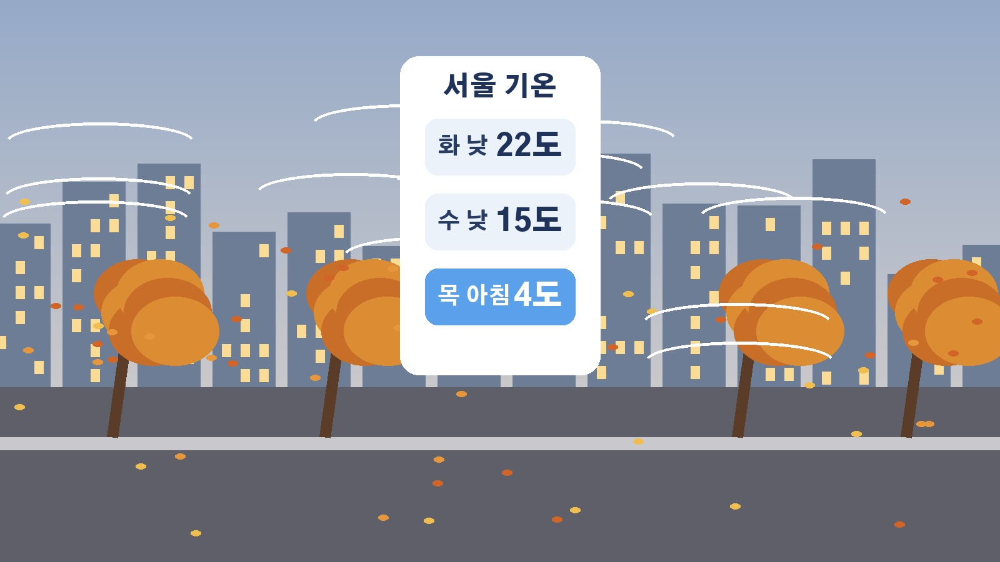

수요일 비 그친 뒤 하루 새 뚝, 목요일 아침 서울 4도와 경기 북부 강원 일부 영하권 추위 정리
주말 폭우가 지나고 쾌청한 가을 하늘을 반기신 분들 많으셨을 텐데, 그 날씨가 오래가지 않을 전망이에요. 화요일과 수요일에 걸쳐 가을비가 지나간 뒤 북쪽에서 찬 공기가 내려오면서, 목요일 아침에는 올가을 들어 가장 추운 날이 될 전망이에요. 출근길 옷차림부터 비 소식, 바람, 그리고 추위가 언제 풀리는지까지 기상청 예보와 언론 보도를 바탕으로 날짜별로 정리해 드릴게요.
목요일 아침 서울 4도, 하루 사이 얼마나 떨어지나
이번 추위의 핵심은 기온이 떨어지는 속도예요. 기상청 예보를 보면 20일 화요일 서울 낮 기온은 22도 안팎인데, 21일 수요일 낮에는 15도에 그치겠습니다. 하루 사이에 낮 기온이 7도가량 내려가는 셈이에요.
본격적인 추위는 22일 목요일 아침에 찾아옵니다. 서울 아침 기온이 4도까지 내려가고, 전국 아침 최저기온은 영하 1도에서 영상 10도, 낮 최고기온은 14도에서 19도로 예보됐어요. 목요일 아침 기온은 전날보다 5도에서 10도가량 낮아지고, 경기 북부와 강원 일부 내륙에서는 영하권으로 떨어지는 곳이 있겠습니다. YTN은 기상청 설명을 전하며 이번 추위가 11월 하순에 해당하는 수준이라고 보도했어요.
오늘과 내일 비는 어디에 얼마나 내리나
추위를 몰고 오는 건 이번 가을비예요. 20일 화요일에는 남해상에 머무는 정체전선의 영향으로 남부지방과 제주도를 중심으로 비가 내리고, 밤에는 경기 남부와 강원 남부 내륙과 산지에도 곳에 따라 비가 오겠습니다.
21일 수요일에는 북서쪽에서 내려온 기압골이 지나가면서 늦은 새벽부터 오전 사이 서울과 인천, 경기 등 중부지방과 전북에 비가 내리는 곳이 있어요. 남부지방은 새벽까지, 제주도는 아침까지 비가 이어지다가 낮부터는 전국이 차차 맑아지겠습니다.
기상청이 20일 오전 11시에 발표한 20일과 21일 이틀간 예상 강수량은 광주와 전남, 부산과 울산과 경남이 10에서 50밀리미터, 전북과 대구 경북 중남부가 5에서 20밀리미터, 대전과 세종, 충남과 충북이 5에서 10밀리미터예요. 제주도 산지와 중산간은 20에서 60밀리미터, 그 밖의 제주도는 5에서 40밀리미터이고, 서울과 인천, 경기와 강원 내륙 산지는 5밀리미터 미만으로 많지 않겠습니다. 지난 주말 중부지방에 쏟아졌던 폭우만큼 많은 양은 아니라는 게 공통된 전망이에요.
실제 기온보다 더 춥게 느껴질 강한 바람
이번에는 기온만 떨어지는 게 아니라 바람도 거세게 붑니다. 21일 새벽부터 서해안과 제주도, 강원 산지와 강원 경북 동해안을 중심으로 순간풍속 초속 20미터 이상의 매우 강한 바람이 불 수 있다고 보도됐어요. 그 밖의 지역에서도 강한 바람이 이어지면서 체감온도는 실제 기온보다 더 낮아지겠습니다.

바다도 거칠어집니다. 기상청 예보로 21일 동해 안쪽 먼바다의 물결은 최고 5미터까지, 서해와 남해 안쪽 먼바다도 최고 3.5미터까지 높게 일겠어요. 20일 오전 기준으로 해안가와 해상에는 강풍 예비특보와 풍랑 예비특보가 발령돼 있었습니다.
연합뉴스TV는 지난 일요일 초속 20미터 안팎의 강풍으로 전국에서 피해가 잇따랐던 만큼 사전에 시설물을 점검해야 한다고 전했고, 기상청도 시설물 관리와 안전사고에 각별히 유의해 달라고 당부했어요.
서리와 얼음, 그리고 커지는 일교차
목요일 아침 기온이 크게 떨어지면서 경기 북부와 강원 북부에서는 서리가 내리거나 얼음이 관측되는 곳이 있겠다는 예보도 나왔어요.
기상청은 이번 주 급격한 기온 변화로 면역력이 떨어지기 쉬운 만큼 두툼한 외투를 준비하는 등 건강 관리에 유의하라고 당부했어요. 목요일 하루만 봐도 전국 아침 최저기온이 영하 1도에서 영상 10도인데 낮 최고기온은 14도에서 19도까지 올라, 아침과 한낮의 차이가 크다는 점도 기억해 두시면 좋겠습니다.
추위는 짧게, 금요일부터 다시 오르는 기온
다행히 이번 추위는 오래가지 않을 전망이에요. 기상청 예보로 23일 금요일에는 전국 아침 최저기온이 2도에서 14도, 낮 최고기온은 18도에서 22도로 다시 오르겠습니다. 금요일 오후부터는 남부지방과 제주도가 차차 흐려지겠고요.
주말부터는 기온이 평년 수준을 되찾을 것으로 기상청은 내다봤어요. 정리하면 수요일 오전까지 비, 수요일 낮부터 바람과 함께 기온 하강, 목요일 아침이 가장 춥고, 금요일부터 회복되는 흐름입니다. 특히 경기 북부와 강원 내륙에 계신 분들은 목요일 아침이 이번 주 가장 조심해야 할 시간대라는 점만 기억해 두셔도 충분합니다.
참고한 기사: 기상청 단기예보 예보종합 2026년 10월 20일 11시 발표, 한국일보 목요일 아침 서울 4도까지 가을비 뒤 초겨울 추위 2026년 10월 20일, 한겨레 화요일 곳곳에 추위 부르는 가을비 이 비 지나면 영하권 추위 2026년 10월 20일, YTN 내일까지 가을비 모레 서울 4도 추위 해안가엔 강풍 2026년 10월 20일, YTN 오늘 내일 또 가을비 이젠 4도 가을 추위 온다 2026년 10월 20일, 연합뉴스 내일날씨 오전까지 전국 곳곳 비 북서쪽 찬 공기에 체감온도 뚝 2026년 10월 20일, 연합뉴스TV 비 오고 강추위 목요일 서울 4도 일부 영하권 2026년 10월 20일, KBS 남부 제주 중심 가끔 비 내일 쌀쌀 강풍 풍랑 유의 2026년 10월 20일
태그
목요일추위 서울4도 영하권 가을비 올가을최저기온 강풍 풍랑특보 일교차 서리 날씨예보